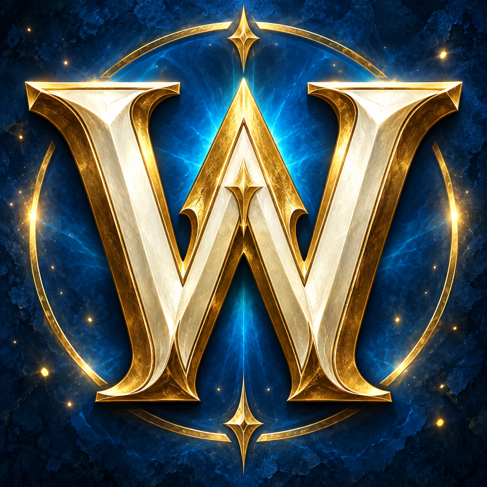
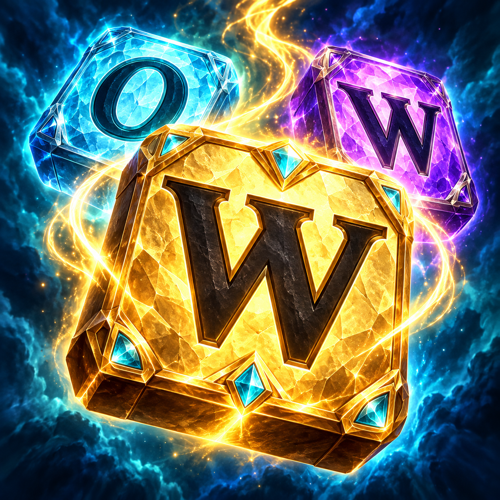
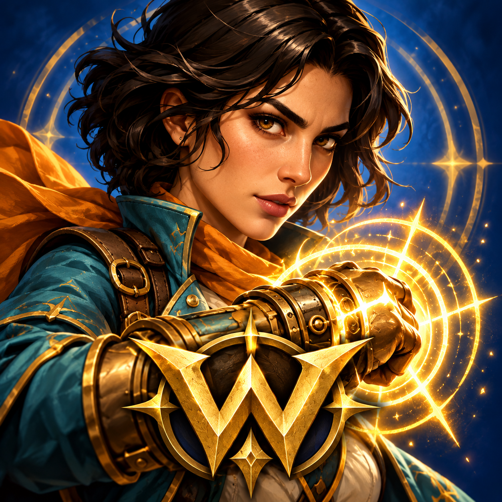
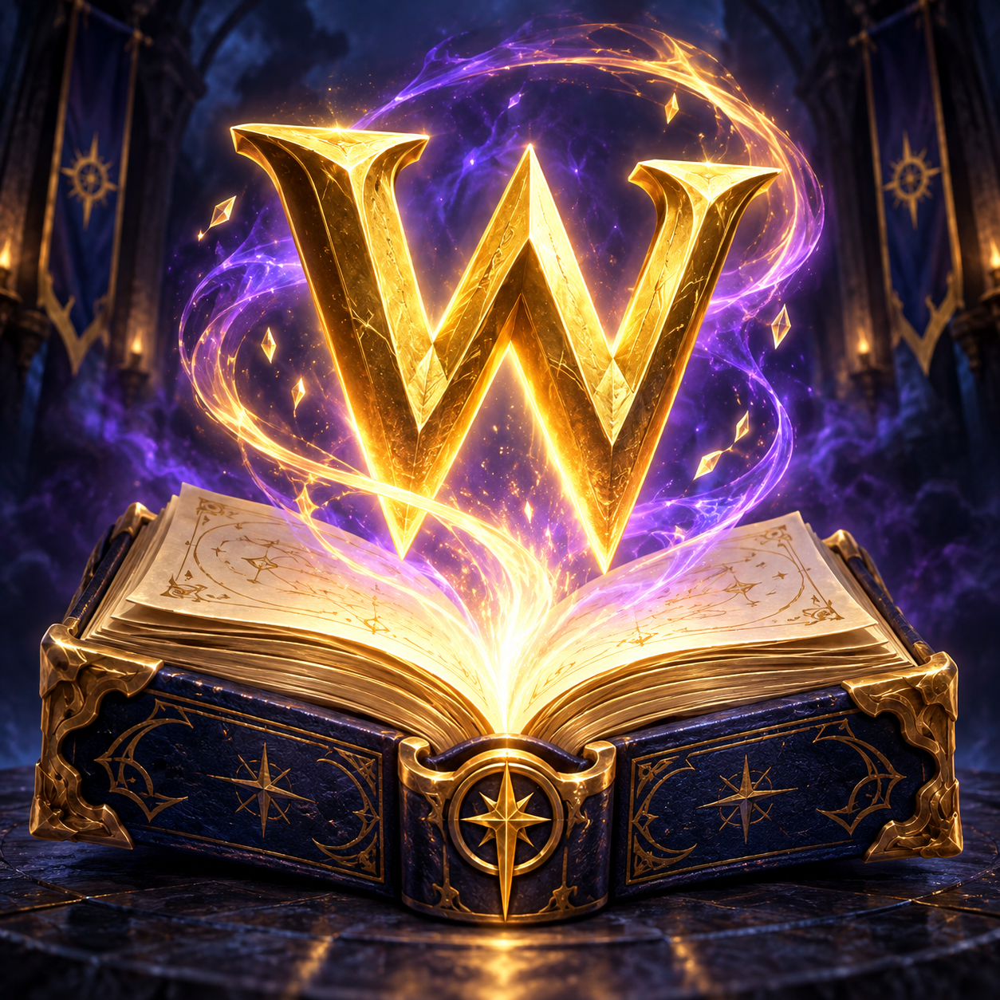

PREDLOG 01Zlatni WJasan znak igre: zlatno slovo, plavi sjaj i izgled skupocenog amblema.64 px48 px
PREDLOG 02Slova puna energijeSpaja dve glavne ideje igre: povezivanje slova i pretvaranje reči u moć.64 px48 px
PREDLOG 03HerojGlavni lik u prvom planu — prepoznatljivo lice i snažniji utisak avanture.64 px48 px
PREDLOG 04Živi leksikonZnanje kao izvor moći: drevna knjiga, magična slova i ljubičasto-zlatni sjaj.64 px48 px